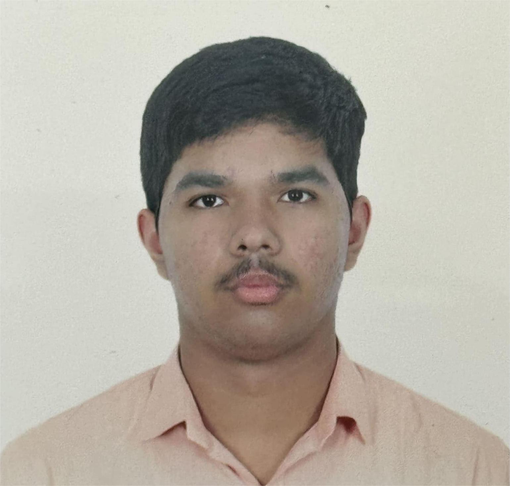

Entering Delhi Technological University marks one of the most exciting milestones of my life. As a first-year student, I have stepped into an environment known not only for academic excellence but also for innovation, creativity, and a culture that encourages students to push beyond traditional boundaries. The transition from school to university has been both thrilling and slightly overwhelming, but every day at DTU strengthens my confidence that I am in the right place to grow—academically, personally, and professionally.
The academic structure at DTU is rigorous yet rewarding. From the very first semester, we are introduced to foundational subjects that form the backbone of engineering and technological education. The curriculum encourages conceptual understanding, hands-on learning, and logical thinking. Professors here do not just deliver lectures; they invite questions, provoke curiosity, and guide us toward becoming problem-solvers. The mix of theory and practical sessions helps us see real-life applications of what we learn, making the overall experience both engaging and meaningful.
DTU’s campus culture is dynamic and vibrant, full of opportunities to explore interests beyond the classroom. Whether it’s technical societies, cultural clubs, startup cells, or sports teams, the university ensures that every student finds a space where they can develop and express themselves. Even as a first-year student, I have witnessed how welcoming seniors are—always ready to mentor, advise, and share their experiences. Festivals, competitions, hackathons, and various events keep the campus buzzing with energy throughout the year. This lively environment fosters a sense of belonging and community that makes the university experience truly memorable.
Stepping into DTU has pushed me out of my comfort zone in the best way possible. Living in a competitive yet inspiring atmosphere has taught me discipline, independence, and time management. Meeting people from diverse backgrounds has broadened my perspective and helped me learn to appreciate different viewpoints. Group projects, assignments, and presentations have strengthened my teamwork and communication skills. Every day brings an opportunity to learn something new—be it a technical concept, a life lesson, or simply a new way of approaching challenges.
As I continue my journey through the first year, I am excited about the possibilities that lie ahead. My aim is to build a strong academic foundation while actively participating in clubs, events, and projects that align with my interests. I hope to make the most of DTU’s resources, culture, and mentorship to shape myself into a competent, confident, and creative individual. This is just the beginning of a long and rewarding adventure, and I look forward to growing with every experience that DTU offers.